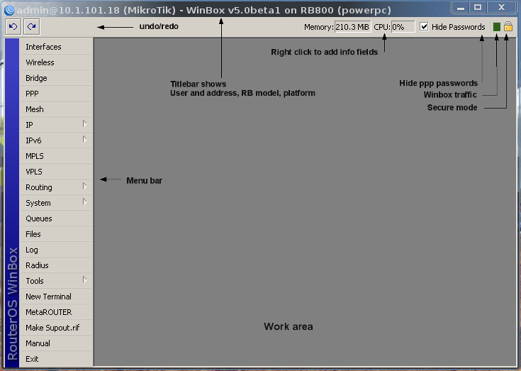
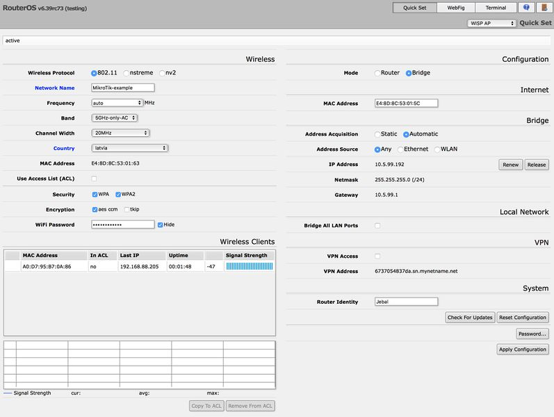

Winbox is a configuration utility that can connect to the router via MAC or IP protocol. Latest winbox version can be downloaded from our download page. Run the Winbox utility, then click the [...] button and see if Winbox finds your Router and it's MAC address. Winbox neighbor discovery will discover all routers on the broadcast network. If you see routers on the list, connect to it by clicking on MAC address and pressing Connect button.
If winbox cannot find any routers, make sure that your Windows computer is directly connected to the router with an Ethernet cable, or at least they both are connected to the same switch. As MAC connection works on Layer2, it is possible to connect to the router even without IP address configuration. Due to the use of broadcasting MAC connection is not stable enough to use continuously, therefore it is not wise to use it on a real production / live network!. MAC connection should be used only for initial configuration.
Winbox is a configuration utility that can connect to the router via MAC or IP protocol. Latest winbox version can be downloaded from our download page. Run the Winbox utility, then click the [...] button and see if Winbox finds your Router and it's MAC address. Winbox neighbor discovery will discover all routers on the broadcast network. If you see routers on the list, connect to it by clicking on MAC address and pressing Connect button.
If you have a router with default configuration, the IP address of the router can be used to connect to the Web interface. The first screen to come up will be QuickSet, where you can set the password and basic settings to secure your device. For more advanced settings, click the WebFig button to open the Advanced mode, which has almost the same configuration functionality as Winbox.
